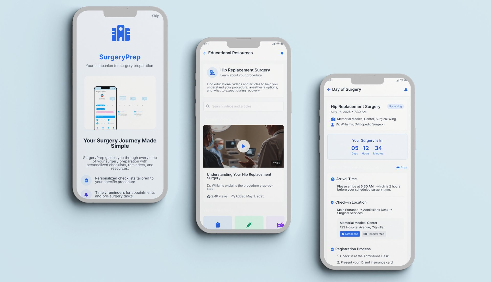
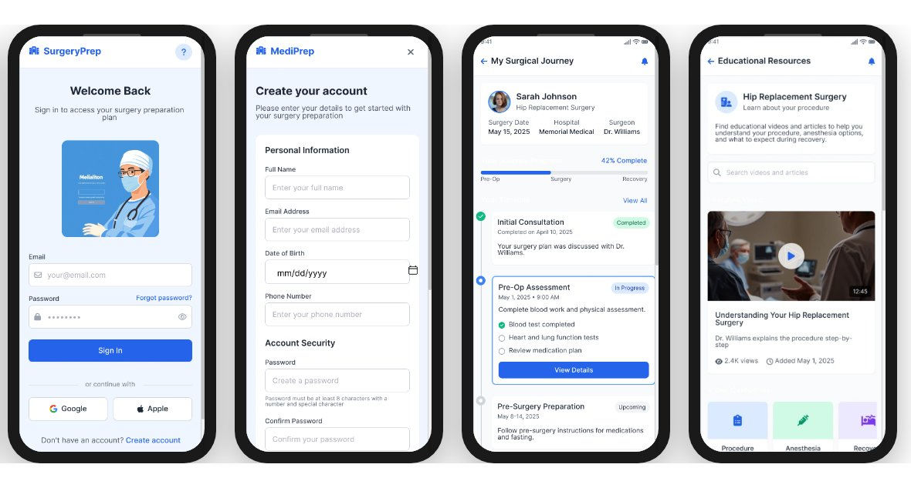

SurgeryPrep
Personalised Surgical Guidance to Reduce Patient Anxiety and Clinical Overload. A personalised mobile companion designed to guide patients through their surgical journey with clear, timely, and emotionally supportive information.

The Challenge
I felt completely lost after my surgery consultation. The leaflet they gave me was confusing, and I couldn't remember half of what the doctor said. I ended up calling the hospital three times just to ask basic questions.
— Sarah, knee surgery patient- Patients forget 40–80% of medical information immediately after consultations
- Printed instructions are easily misplaced or misunderstood
- Anxiety peaks before surgery due to unclear preparation steps
- Healthcare staff spend significant time answering repetitive patient questions
Research
Conducted patient interviews with 8 participants across orthopedic, cardiac, and general surgeries; interviewed 5 clinicians. Led journey mapping from diagnosis to recovery and identified critical communication gaps.
Research Synthesis


User Personas


Ideation & Architecture
Explored over 20 concepts through Crazy 8s. Live chat and real-time clinician messaging were excluded due to clinical risk and regulatory complexity. Focus remained on clarity, safety, and feasibility.


Design & Final Screens
Low-fidelity wireframes established core flows, then iterative testing refined hierarchy and clarity. A calm, reassuring aesthetic was maintained throughout while upholding medical credibility.

High-Fidelity Mobile Screens

Complete app experience


Outcomes
"Andrew's empathetic approach to design was exactly what this project needed. He navigated the complex stakeholder landscape with remarkable skill, ensuring clinical accuracy while keeping the patient experience at the forefront."